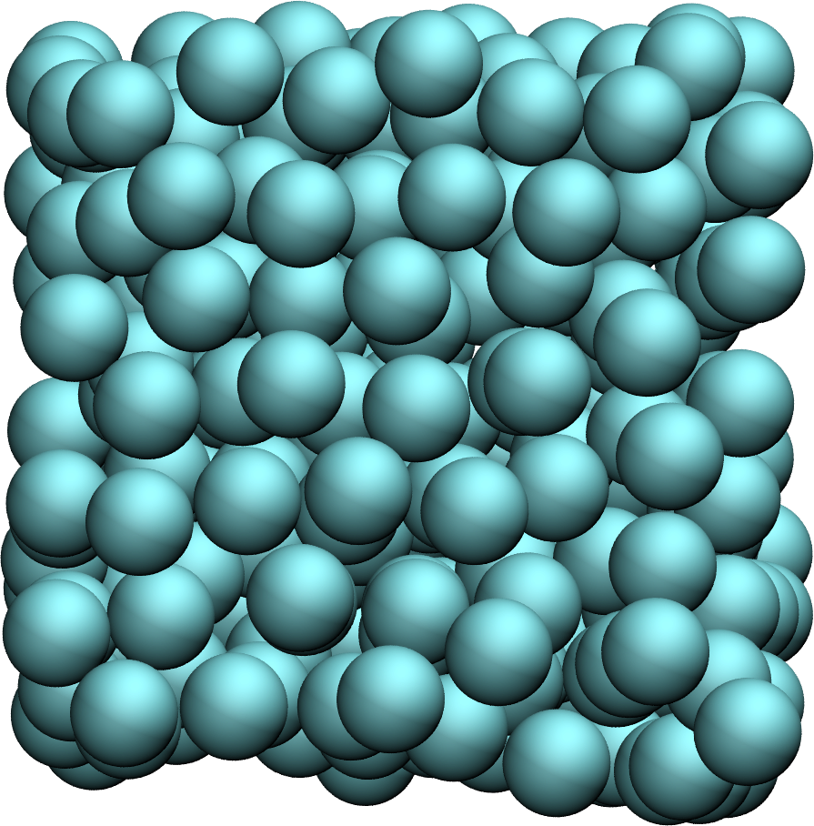
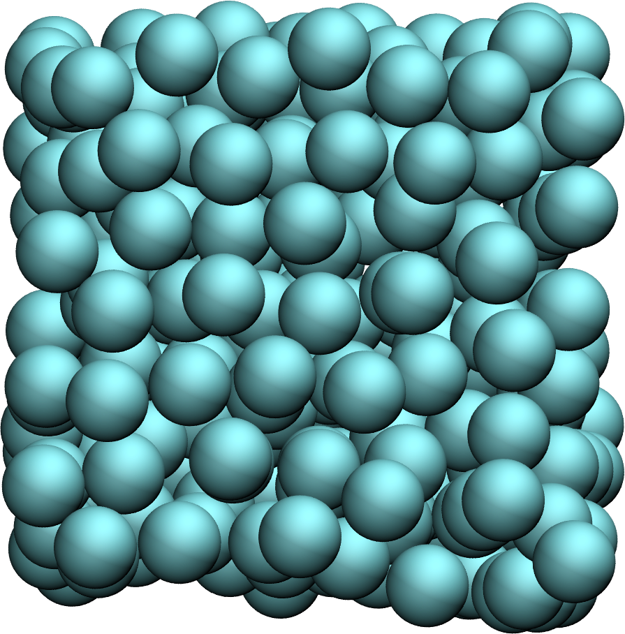
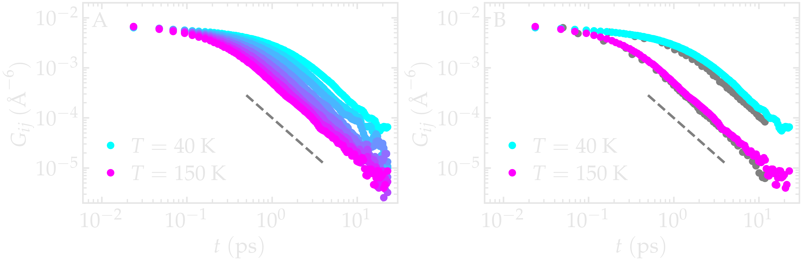
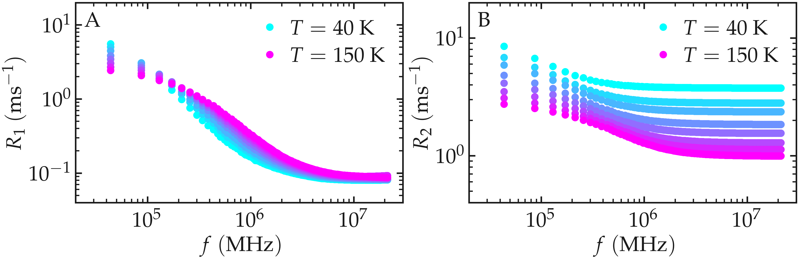
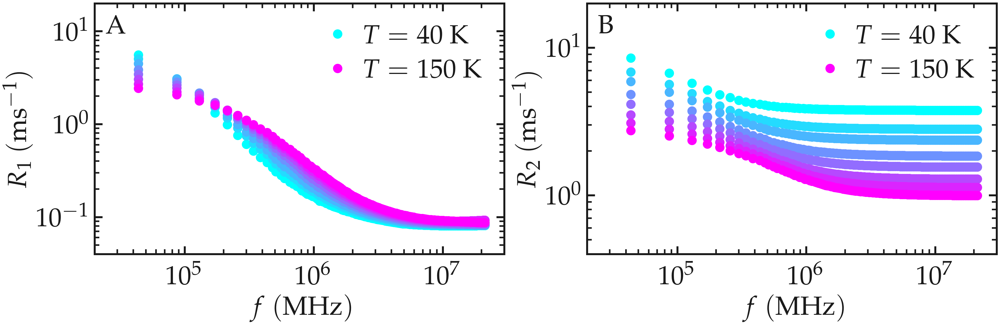

Simple fluid¶
Here, NMR relaxation rates are measured from a Lennard-Jones fluid, and compared to the results from Ref. [5].
System¶
 

{kind=link}
The system consists of 16,000 particles interacting via the classical Lennard-Jones (LJ) 12-6 potential and simulated using LAMMPS [24]. Each particle has a mass \(m = 1\,\text{g/mol}\), and LJ parameters \(\sigma = 3\,\text{Å}\) and \(\epsilon = 0.1\,\text{kcal/mol}\). All reduced parameters were taken to match the study by Grivet [5]. Specifically, a cutoff of \(4 \sigma\) was used for the LJ interactions, the simulation box has a volume of \((26.9~\sigma)^3\) to match the reduced density of \(\rho^* = 0.84\). Production runs were performed in the microcanonical (NVE) ensemble, during which 10,000 timesteps were executed, equivalent to 50 times the reference time \(\sqrt{m \sigma^2/\epsilon}\). Configurations were recorded every 10 timesteps. A timestep of \(0.005\,\sqrt{m \sigma^2/\epsilon}\) was used. The imposed temperatures ranged from \(T = 30\) to \(160\,\text{K}\), corresponding to reduced temperatures from \(T^* = 0.8\) to \(3.0\).
All LAMMPS input scripts and analysis scripts written in Python are provided on GitHub; see dataset-LJ-fluid.
Reproducing Grivet’s results for a simple fluid¶
The correlation function \(G_{ij}^{(0)}\) was first extracted for all temperatures. For the two extreme values of \(T\), namely \(T = 50\) and \(140\,\text{K}\), the functions \(G_{ij}^{(0)}\) are compared with the correlation functions reported by Grivet [5]. Our results show good agreement with those of Grivet, with however some differences observed at the lowest temperature. The results show that \(G_{ij}^{(0)}\) shifts to longer times as the temperature decreases, as expected from the slowing down of molecular motion.

Figure: A) Correlation function \(G_{ij}^{(0)}\) as extracted from the LJ fluid simulation for all temperatures. B) \(G_{ij}^{(0)}\) for two different temperatures compared with the data from Grivet [5] (gray symbols). The dashed line shows \(t^{-3/2}\).
The NMR relaxation rate spectra \(R_1\) and \(R_2\) were extracted for
all temperatures using NMRDforMD. For all temperatures, the spectra show
a decrease with increasing frequency \(f\).
 

Figure: NMR relaxation rates \(R_1\) (A) and \(R_2\) (B) as a function of the frequency \(f\).
The NMR relaxation rates \(R_1\) and \(R_2\) were also extracted for all temperatures, at a frequency \(f_0 = 150\,\text{GHz}\) (or 0.07 in dimensionless units). \(R_1(f_0)\) shows a maximum at intermediate temperature and a minimum at the lowest temperature. \(R_1(f_0)\) decreases with increasing temperature. Our results show good agreement with the data from Grivet [5].


Figure: NMR relaxation rates \(R_1\) (A) and \(R_2\) (B) at a frequency 0.07 (dimensionless), or \(f_0 = 151\,\text{GHz}\). The data from Grivet [5] are shown with gray symbols.